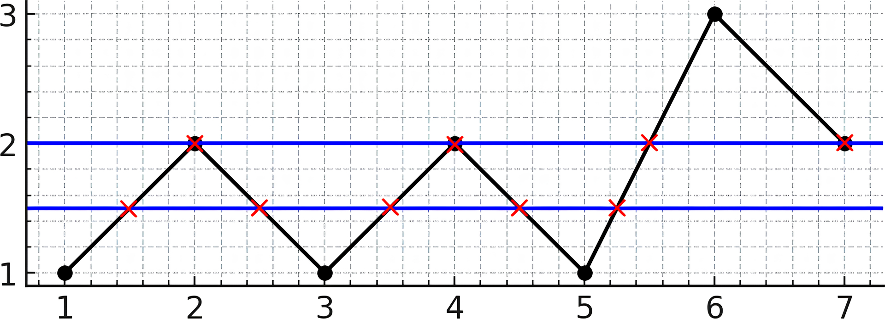
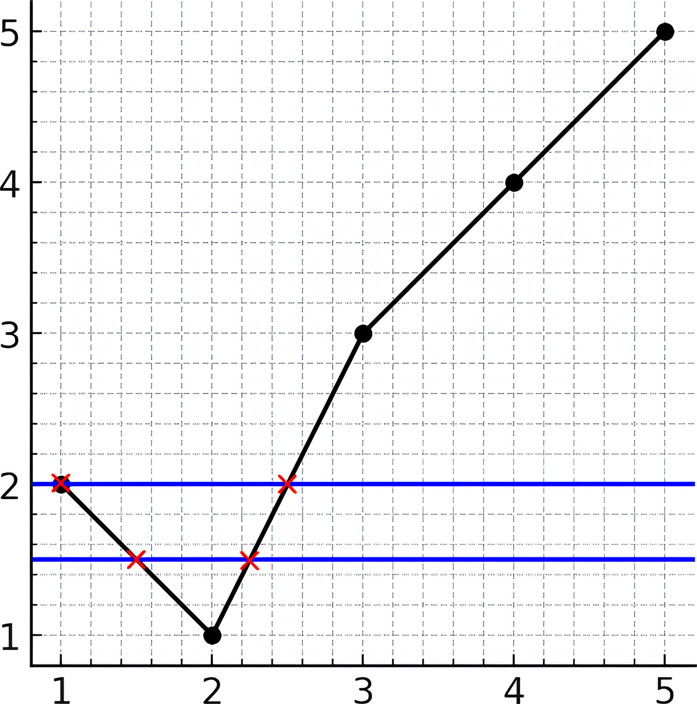

| Category | Difficulty | Likes | Dislikes |
|---|---|---|---|
| Algorithms | Hard | 29 | 4 |
array | hash-table | math | binary-indexed-tree | geometry | line-sweep | sorting
microsoft | facebook
There is a line chart consisting of n points connected by line segments. You are given a 1-indexed integer array y. The kth point has coordinates (k, y[k]). There are no horizontal lines; that is, no two consecutive points have the same y-coordinate.
We can draw an infinitely long horizontal line. Return the maximum number of points of intersection of the line with the chart.
Example 1:

Input: y = [1,2,1,2,1,3,2]
Output: 5
Explanation: As you can see in the image above, the line y = 1.5 has 5 intersections with the chart (in red crosses). You can also see the line y = 2 which intersects the chart in 4 points (in red crosses). It can be shown that there is no horizontal line intersecting the chart at more than 5 points. So the answer would be 5.Example 2:

Input: y = [2,1,3,4,5]
Output: 2
Explanation: As you can see in the image above, the line y = 1.5 has 2 intersections with the chart (in red crosses). You can also see the line y = 2 which intersects the chart in 2 points (in red crosses). It can be shown that there is no horizontal line intersecting the chart at more than 2 points. So the answer would be 2.
Constraints:
2 <= y.length <= 1051 <= y[i] <= 109y[i] != y[i + 1] for i in range [1, n - 1]